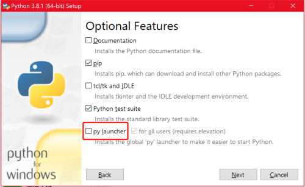

Windows 中管理多版本 Python
多版本 Python
各个版本的 Python 并不是很兼容，有时，我们需要在一台电脑上安装多个版本的 Python 来保证一些代码的兼容。
安装的 Python 提供的 py 命令，可以在 Windows 上方便的安装、管理多版本的 Python。
安装 py 命令
在安装 Python 的时候，勾选 py launch 选择项。

安装成功后，会自动添加 py 命令。
py 命令的使用
我们在命令行输入 py 命令，会打开默认的 Python 解释器。
如果我们的电脑上安装了多个版本的 Python。可以使用：
py -0
来查看当前电脑所有安装的 Python 版本。输出如下：
Installed Pythons found by py Launcher for Windows
-3.8-64 *
-3.7-64
-3.6-64
可以看到，电脑上安装了 3 个版本的 Python。* 表示当前默认版本的 Python，即运行 py 不指定版本时，使用的版本。
指定 Python 版本运行
我们可以使用:
py -3.6
来指定需要使用的 Python 版本是 Python3.6。
如果我们需要创建一个 Python3.6 版本的虚拟环境，可以使用：
py -3.6 -m venv venv_name
venv_name 表示的是要创建的虚拟环境的文件夹名字。我们可以任意指定。
这样，我们在激活虚拟环境后，就可以使用个 3.6 版本的 Python 了。
同样道理，如果我们需要 Python3.8 的环境，则使用：
py -3.8 -m venv venv_name
是不是在 Windows 上管理多版本的 Python 很方便呢？
参考资料
- py -h